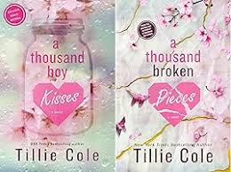
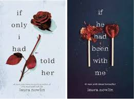

Introduction
Hello my name is Mirian Menchu!I am a student at Thomas A. Edison High School. Welcome to my portfolio where you can see what I've been working on in class. I am in Design and Development for the 10th grade where I work by myself and with my peers for certain activities and projects.
This was a project I had done in class where it talks about a baker and the instructions he wrote down to make these delicious treats. Not only that but he also included the things you need to bake them. Here are some pictures and the project I did:
Things About Me! My name is Mirian menchu and I am 15 years old. My parents are from Guatemala and I was born here in the US. I enjoy reading books and playing volleyball my two faborite hobbies. Voleyball has always been my passion and I enjoy the redness from the ball hitting my arm and the feeling of smacking the ball with such force and direction. It feels good playing with others and teaching others, it's something I really enjoy. I feel the same for books, being able to just read books and feel into the world that the book describes and understanding the characters personality and character development. I enjoy spending my days not on social media but spending on things like books and studying.I enjoy school decently and im doing doing really good, especially adjusting to a new school and new friends. It was defenietly a challnge but I did overcome that and I enjoy coming everyday.
 